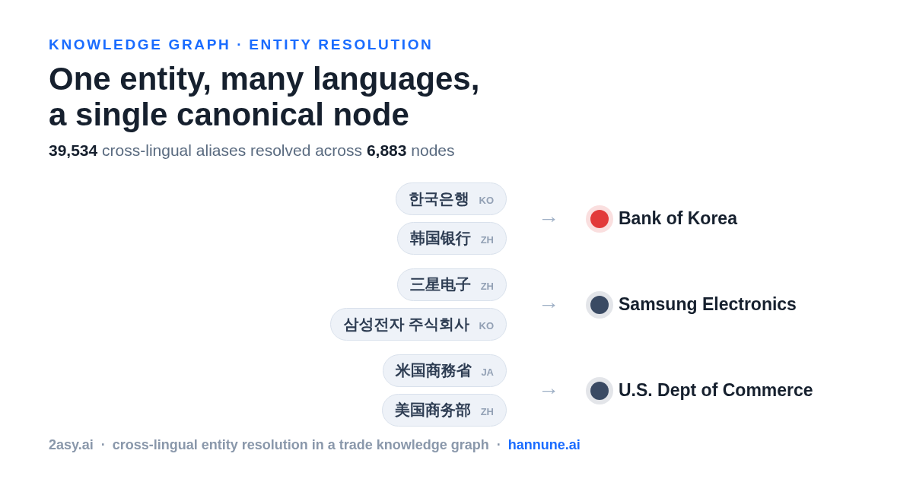
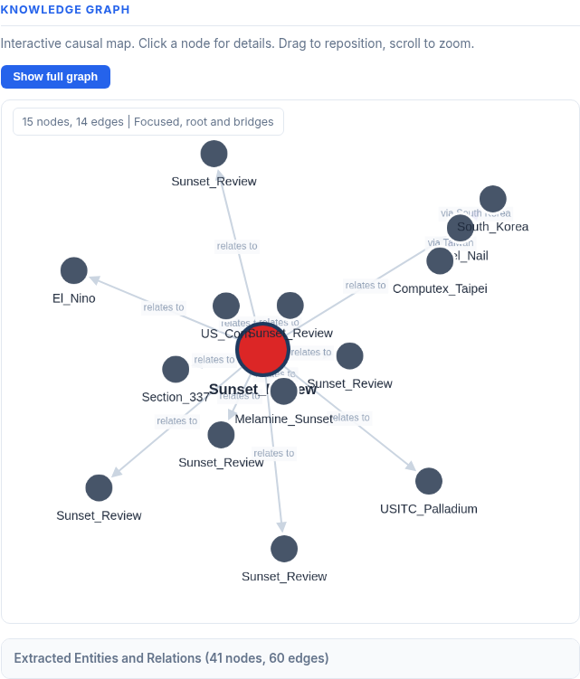

Writing
June 13, 2026 · LLM Infrastructure
I Built a Local LLM Rig to Escape API Bills. Then I Paid OpenAI Again.
2asy.ai needs thousands of single-document extractions per cycle. Local llama.cpp, OpenRouter, Gemini batch, and OpenAI Batch were tested under one strict rule: no cross-document attention. Cloud beat the local rig on the batch lane, the rig kept the live serving lane. The decision lives at the pipeline level, not the company level.
Read →
June 7, 2026 · Graph RAG
Cross-Lingual Entity Resolution in a Trade Knowledge Graph: Adding 39,534 Aliases to 6,883 Nodes
2asy.ai reads English trade news, but entities show up in Korean, Japanese, and Chinese. I added 39,534 cross-lingual aliases across 6,883 canonical entities so foreign-language mentions resolve to the same node instead of fragmenting the graph. Validated on the local ER registry; rollout to the live graph is pending.
Read →
June 3, 2026 · Graph RAG
From Vector Search to a Cross-Domain Ontology Graph: How 2asy.ai Reads Tariff News
2asy.ai started on plain vector RAG, moved to a simple per-article graph, and now runs a cross-domain ontology Graph RAG that resolves entities across documents and traverses causal chains. The latest tariff briefing renders the actual causal graph on the page. It is thin today, and that is a data-accumulation problem, not a design ceiling.
Read →May 30, 2026 · Graph RAG
How I Caught My LLM Fabricating Its Own Evidence
In the 2asy.ai knowledge graph, the model fabricated the evidence quotes behind its own relations, stitching distant sentences together with ellipses. A deterministic substring check caught it, and full-body-or-skip removed the cause. Over 500 documents cleaned.
Read →May 26, 2026 · AI Agents
How I Turned Claude Code Into the Operator of a One-Person AI Company
Moving Claude Code from smart autocomplete to running daily operations: a layered CLAUDE.md, seven sub-agents, persistent memory, and hard guardrails enforced by hooks. The hard part of production AI agents is operational discipline, not prompting.
Read →May 26, 2026 · Graph RAG
The Real Work in Graph RAG Is Not Extraction
Building the seed knowledge graph for 2asy.ai taught me that extraction is the easy part. The real work is normalization: 360 relation types down to 80 canonical forms, duplicate entities merged, evidence fixed so the causal graph is walkable.
Read →May 26, 2026 · Entity Resolution
Entity Resolution as an API: How I Built It, Over-Fit It, and Fixed It
Turning entity resolution into a single API call by wrapping Splink with a registry that learns aliases over time. Then walking into the classic over-fit trap, and fixing it with a held-out evaluation set.
Read →